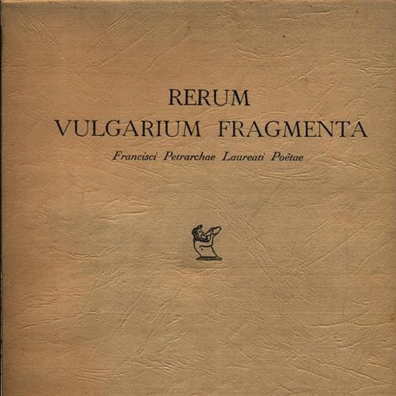

Rerum vulgarium fragmenta, 1
Francesco Petrarca, redazione finale 1374
Sonetto proemiale del Canzoniere: il poeta si rivolge ai lettori e giudica il proprio giovanile errore.
Voi ch'ascoltate in rime sparse il suono
di quei sospiri ond'io nudriva 'l core
in sul mio primo giovenile errore
quand'era in parte altr'uom da quel ch'i' sono,
del vario stile in ch'io piango et ragiono
fra le vane speranze e 'l van dolore,
ove sia chi per prova intenda amore,
spero trovar pietà, nonché perdono.
Ma ben veggio or sì come al popol tutto
favola fui gran tempo, onde sovente
di me medesmo meco mi vergogno;
et del mio vaneggiar vergogna è 'l frutto,
e 'l pentersi, e 'l conoscer chiaramente
che quanto piace al mondo è breve sogno.